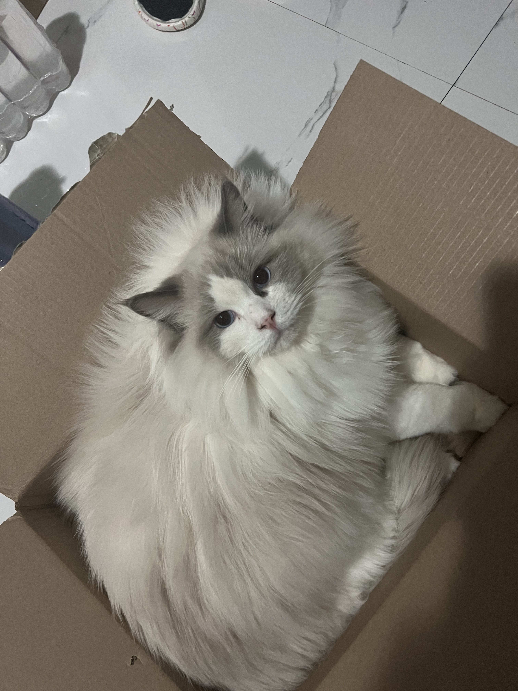
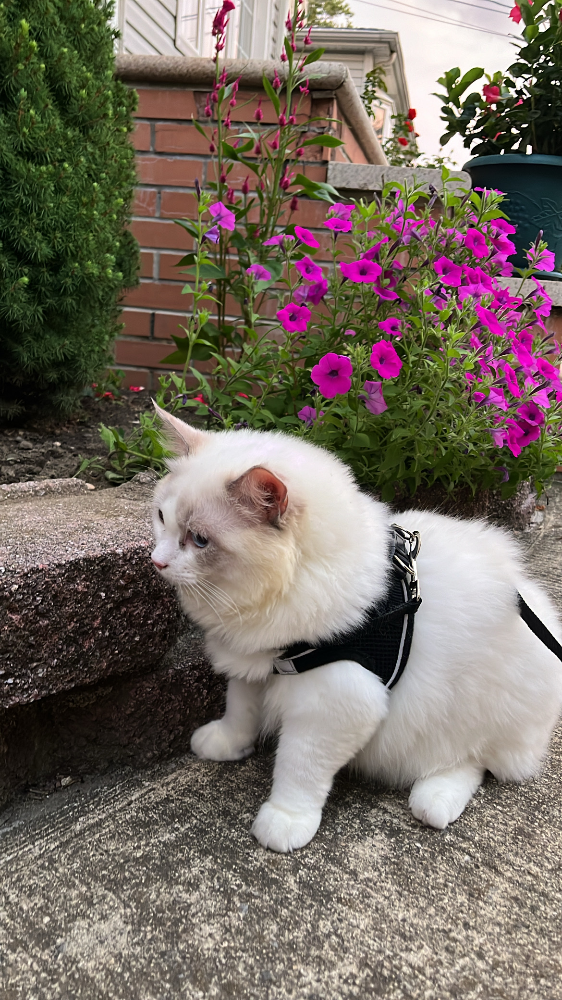
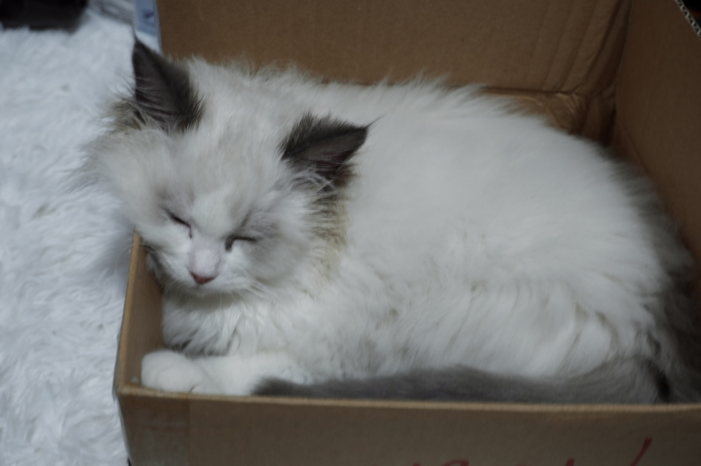
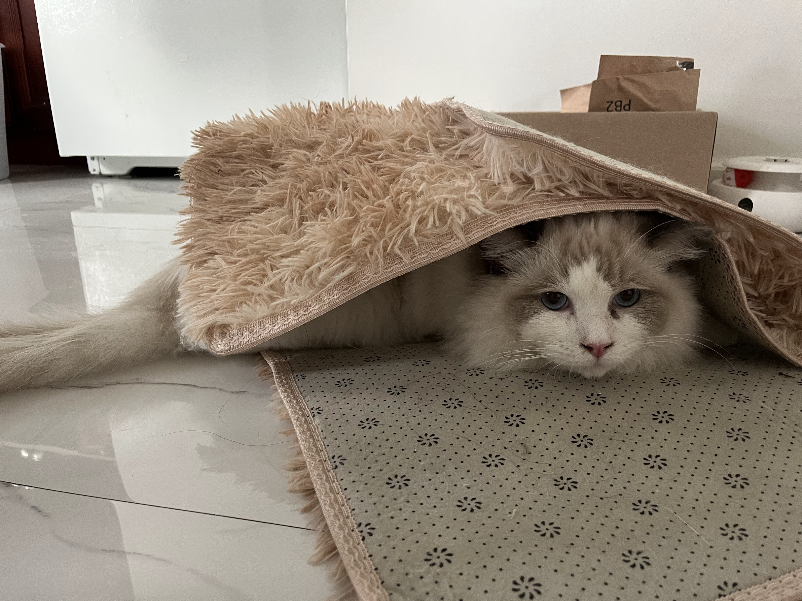

4. Things That he Hates
When you touch his butt, when there's no food is in his bowl.

Doesn't like cat snacks, hate catnips and only eat cat food and drink milk.
 Sit in any boxes,catch balls,run around chasing nothing,play cat toys, go outside for walks.
 Love to watch fish,mice and worm moving around.
When you touch his butt, when there's no food is in his bowl.